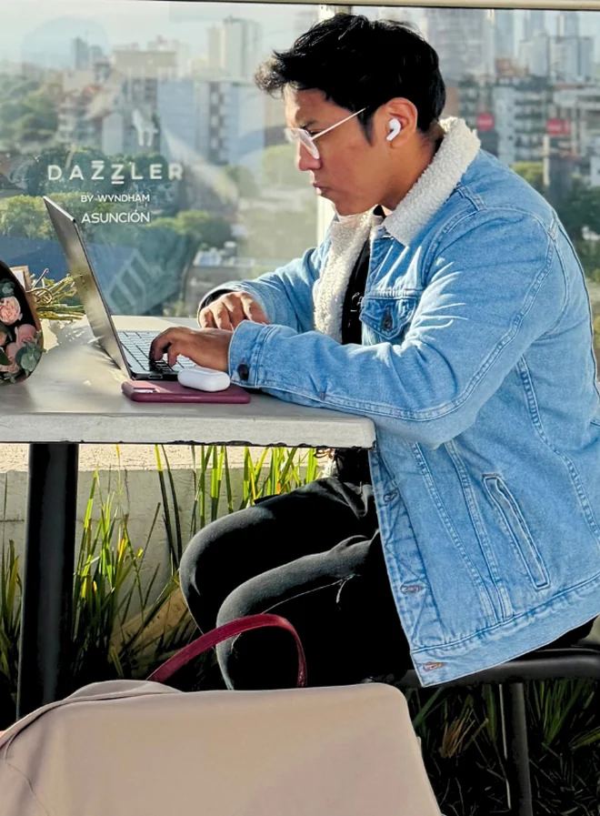

Hay una forma nueva
de ganarse la vida.
Y de vivirla.
Te enseñaron una sola forma de vivir: estudia, consigue un puesto, aguanta. Esa fórmula dejó de funcionar y nadie lo anunció. La vida no es aceptar el sueldo, el techo y el mercado que te tocaron por haber nacido donde naciste — y esta página es lo que fui armando para salir de ahí.
Quién te habla
y de qué.
Walter Álvarez. Estudié ingeniería civil y trabajé en el Tribunal Agroambiental,
que es más o menos lo contrario de una startup. No tenía contactos en tecnología, ni
portafolio, ni un inglés que valiera la pena presumir.
Hoy hago contenido para Stacksync, una startup de Y Combinator en San Francisco, en
remoto y cobrando en dólares. Antes fui CMO de Startupeable, el podcast de startups más
grande de Latinoamérica, donde entrevisté a más de cincuenta fundadores y vi por dentro
cómo deciden a quién contratan.
No escribo esto porque lo leí en algún lado. Es, literalmente, cómo me gano la vida —
y todo lo que está en esta página lo usé yo primero.

No porque sea lo importante:
porque decide todo lo demás.
Cambiarlo no es mudarse ni empezar de cero. Es dejar de venderle tus horas al mercado que te tocó y vendérselas al que paga × más.
Así se consigue trabajo
sin pedir permiso.
// El método PVP
PVP es Permissionless Value Proposition. El orden normal es pedir permiso primero —mandar el CV, esperar— y recién después demostrar que puedes. Acá se invierte: demuestras primero y pides después. Son cuatro pasos, y para empezar no necesitas portafolio, contactos ni inglés avanzado.
Investiga
Antes de proponer nada tienes que entender el negocio mejor que el resto de los que aplican. No es curiosidad: es la materia prima de todo lo demás. Lo que antes tomaba semanas, hoy toma una tarde.
Encuentra un problema
Toda empresa tiene problemas que sus propios equipos ya no ven, porque están adentro. Tu ventaja no es saber más que ellos: es mirar desde afuera, con ojos nuevos y en un área que dominas.
Resuélvelo antes de que te lo pidan
Acá se invierte el orden normal. En vez de pedir permiso para demostrar que puedes, demuestras primero y pides después. El trabajo que entregas deja de ser una promesa y pasa a ser evidencia.
Mándalo al fundador
Vas a la persona que decide, no al formulario donde compites con cientos. Y no pides el trabajo — pides una conversación. Es una puerta mucho más fácil de abrir, y es la única que necesitas.
Hola [nombre], estuve mirando cómo [empresa] hace [algo concreto] y encontré algo que creo que les está costando [dinero / clientes / alcance]. Armé un análisis con la solución, acá está el link. Si te sirve, ¿tienes quince minutos esta semana?
Investiga
Antes de proponer nada tienes que entender el negocio mejor que el resto de los que aplican. No es curiosidad: es la materia prima de todo lo demás. Lo que antes tomaba semanas, hoy toma una tarde.
Encuentra un problema
Toda empresa tiene problemas que sus propios equipos ya no ven, porque están adentro. Tu ventaja no es saber más que ellos: es mirar desde afuera, con ojos nuevos y en un área que dominas.
Resuélvelo antes de que te lo pidan
Acá se invierte el orden normal. En vez de pedir permiso para demostrar que puedes, demuestras primero y pides después. El trabajo que entregas deja de ser una promesa y pasa a ser evidencia.
Mándalo al fundador
Vas a la persona que decide, no al formulario donde compites con cientos. Y no pides el trabajo — pides una conversación. Es una puerta mucho más fácil de abrir, y es la única que necesitas.
Dónde están
los trabajos.
Páginas hechas para esto. Acá no compites contra todo Bolivia: compites contra los pocos que saben que existen. Filtra siempre por remote.
Las preguntas
incómodas.
// Lo que estás pensando
No tengo experiencia +
El PVP crea la experiencia. El documento que haces para esa empresa ES tu portafolio — trabajo aplicado, hecho ahora, para ellos. Eso ya demuestra más que cualquier certificado.
Soy de Bolivia, nadie me contrata +
Una startup de diez personas no contrata ubicaciones — contrata soluciones. Bolivia no es un nombre que reconozcan, pero tampoco Perú o Colombia al principio. Lo que sí reconocen es si entendiste su problema.
No tengo inglés +
Empieza con startups en español —México, Colombia, Argentina, España— mientras construyes el inglés en paralelo. Son dos procesos simultáneos, no secuenciales. Y antes de mandar cualquier mensaje en inglés, pásalo por IA.
¿Y si me ignoran? +
La mayoría lo va a hacer. Planifica diez a veinte intentos reales, no tres. Lo que arruina esto no es la tasa de respuesta: es hacer tres intentos y concluir que no funciona.
No sé cómo cobrar desde acá +
Yo cobro con Wallbit: te abre una cuenta bancaria en Estados Unidos en 24-48 horas sin ser ciudadano ni viajar. Es lo que uso todos los meses. También existen Wise, USDT, y plataformas como Deel para contratos más formales.
¿Es legal? +
Sí. Trabajar remotamente para empresas extranjeras como freelancer desde Bolivia es legal. Cuando escales a ingresos consistentes, regularizas con el NIT.
¿Cuánto tarda en funcionar? +
Depende de qué tan bien ejecutes el PVP, no de cuánto esperes. Con un análisis serio y mensajes que demuestran trabajo real, uno a tres meses hasta la primera oportunidad concreta. Si mandas plantillas genéricas, no llega nunca. No es fracaso si no hay cliente el primer mes.
¿Necesito certificaciones? +
No. PVP no pide certificaciones. Pide trabajo real.
No te voy a
vender un curso.
// Sin letra chica
Arriba viste los cuatro pasos. El método completo tiene doce partes y está a un clic, entero y abierto. No hay lista de espera, no hay correo que dejar, no hay llamada que agendar. Si te sirve, úsalo. Si no, no perdiste nada.
Lo demás
que construí.
// Sistemas
Todo lo que publico sobre IA sale de acá: sistemas que uso todos los días, no de lo que se podría hacer. Dos están abiertos para que los copies.